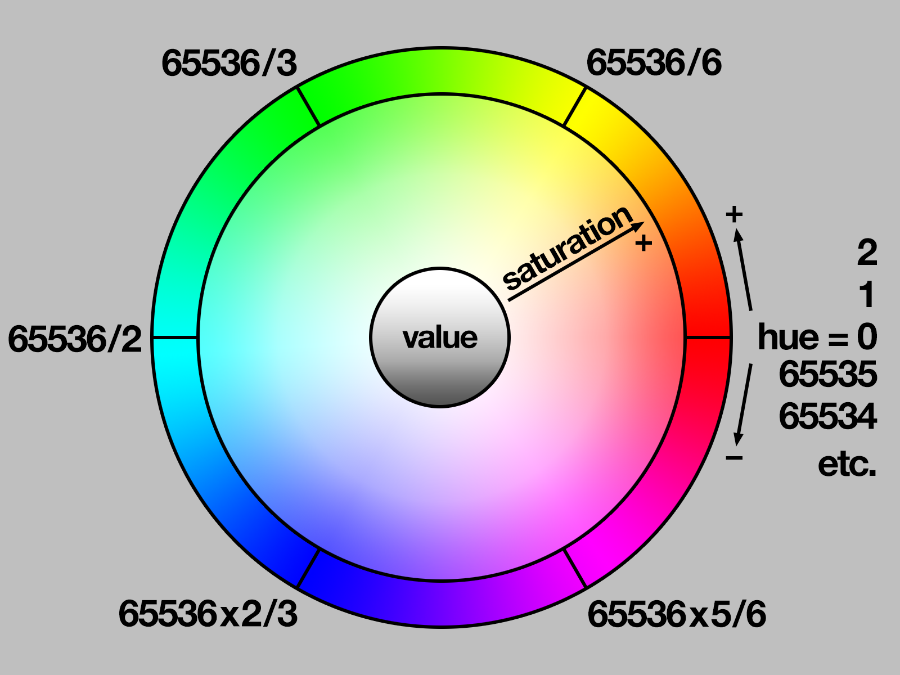

Ledring
Om de kleuren en helderheid van de leds op de ledring aan te passen kun je gebruik maken van de Adafruit Neopixel library. Om deze te installeren ga je naar Sketch > Library > Manage Libraries en zoek je naar Adafruit Neopixel. Deze library geeft handige functies waarmee de leds aangestuurd kunnen worden op led ringen maar ook ledstrips.
Functies
De library heeft de volgende functies.
begin()initialiseert het ledring object waarna het gebruikt kan worden.show()schrijft de wijzigingen aan de pixel kleuren naar de ledring voor weergave.setPixelColor(n, red, green, blue)zet de kleur van de pixel.fill(color, first, count)zet de kleur van meerdere achtereenvolgende pixels.Color(red, green, blue)converteerd losse waarden voor rood, groen en blauw naar een enkele kleurwaarde.ColorHSV(hue, saturation, value)converteerd losse waarden voor hue, saturation en value naar een enkele kleurwaarde.getPixelColor(n)geeft de kleur van een pixel.setBrightness(brightness)zet de helderheid van de ledring met een waarde tussen de 0 en de 255.getBrightness()geeft de helderheid van de ledring.clear()verwijdert alle ingestelde kleuren van elke pixel.numPixels()geeft het aantal pixels in de ledring.gamma32(color)geeft een gamma gecorigeerde kleurwaarde terug.
Voorbeeld
1 2 3 4 5 6 7 8 9 10 11 12 13 14 15 16 17 18 19 20 21 22 23 24 25 26 27 28 29 30 31 32 33 34 35 36 37 38 39 40 41 42 43 44 45 46 47 48 49 50 51 52 53 54 55 56 57 58 59 60 61 62 63 64 65 66 67 68 69 70 71 72 73 74 75 76 77 78 79 80 81 82 83 84 85 86 87 88 89 90 91 92 93 94 95 96 97 98 99 100 101 102 103 104 105 106 107 108 109 110 111 112 113 114 115 | |
Werking
Allereerst moet de library toegevoegd worden aan de applicatie.
1 | |
Vervolgens slaan we op aan welke pin de ledring verbonden is en hoeveel pixels er op de ring zitten, in ons geval pin D4 en 60 pixels. Daarna maken we een Neopixel strip object aan.
1 2 3 | |
setup()
In de setup() initializeren we het strip object door de begin() functie aan te roepen en zetten we alle pixels uit door de show() functie aan te roepen.
1 2 3 4 | |
Pixels een kleur geven
De kleur van een pixel kan ingesteld worden door middel van de setPixelColor(n, red, green, blue). Daar bij is n het nummer van de pixel in de ring en zijn de kleuren gegeven als een getal tussen de 0 en 255. Het volgende voorbeeld zet de kleur van de 12e pixel naar magenta.
1 | |
Een alternatief is om de kleur van de pixel in te stellen met een kleurwaarde met de setPixelColor(n, color) functie. Daarvoor kun je de waarde van een kleur in een 32 bit getal opslaan zodat je hem later kunt hergebruiken. Hiervoor kun je de Color(red, green, blue) functie gebruiken. Het volgende voorbeeld slaat de kleur magenta op in een variabele en zet vervolgens de kleur van de 12e pixel naar magenta.
1 2 | |
Let op! setPixelColor() heeft niet meteen effect op de leds
De ingestelde kleuren moeten eerst naar de ledring verstuurd worden. Daarvoor kun je de show() functie gebruiken.
De show() functie zorgt ervoor dat de voor de pixels ingestelde kleuren weergeven op de ledring.
1 | |
Meerdere pixels een kleur geven
Je kunt meerdere pixels dezelfde kleur geven met de fill(color, first, count) functie. Daarbij is color een 32-bit kleur waarde, is first de eerste pixel die de kleur moet krijgen en is count het aantal pixels dat de kleur moeten krijgen. In het volgende voorbeeld worden de pixels 4 tot en met 8 de kleur magenta gegeven.
1 2 | |
De clear() functie kan gebruikt worden om alle pixels uit te zetten.
1 | |
Met numPixels() kun je het aantal pixels in de ring opvragen. Dit kun je gebruiken in een for loop om alle pixels een kleur te geven. Het volgende voorbeeld maakt een kleurverloop van rood naar blauw over de hele ring.
1 2 3 4 | |
Helderheid
De helderheid van de hele ledring kan met setBrightness(value) ingesteld worden. Daarbij is value een waarde tussen de 0 voor uit en 255 voor maximale helderheid. Om de ledring op een kwart helderheid te zetten kun je dus de volgende code gebruiken:
1 | |
Let op! setBrightness() heeft niet meteen effect op de leds
De ingestelde helderheid moeten eerst naar de ledring verstuurd worden. Daarvoor kun je de show() functie gebruiken.
setBrightness() is eigenlijk bedoeld om maar één keer aangeroepen te worden in de setup()
Het is dus eigenlijk niet de bedoeling om hem voor animaties te gebruiken. Het is beter om met eigen logica de helderheid van je pixels aan te passen als je hier animaties mee wilt maken. Dit komt omdat de functie de waarden van je pixel data in het RAM aanpast en daarmee informatie verloren gaat, het is een "lossy" operatie.
HSV kleuren
De Neopixel library ondersteunt ook het gebruik van kleuren in de "HSV" (hue-saturation-value) kleurruimte als alternatief voor de gebruikelijke RGB (red-green-blue). Voor sommige effecten is dit veel gebruiksvriendelijker, bijvoorbeeld voor het regenboog effect (zeer populair onder creaters). Een HSV kleur kan met de ColorHSV() opgeslagen worden als RGB waarde.
1 | |

Daarbij zijn de volgende parameters van belang:
hueis een 16-bit nummer dat start bij 0 voor rood en de kleurcirkel via geel (65536/6), groen (65536/3), cyaan (65536/2), blauw (655362/3) en magenta (655365/6) weer bij rood aan komt (65536).saturationis een 8-bit nummer dat de verzadiging van de kleur aangeeft waarbij 0 onverzadigd is en 255 maximale verzadiging.valueis een 8-bit nummer dat de helderheid van de kleur aangeeft waarbij 0 zwart is en 255 maximale helderheid.
Als je alleen een pure kleur wilt met maximale verzadiging en helderheid dan kun je de functie ook aanroepen met alleen de hue:
1 | |
Gamma correctie
Als je veel met kleuren werkt zul je merken dat wanneer je faded tussen kleuren het soms lijkt alsof ze overmatig helder of flets er uit zien. Dit komt omdat nummeriek de kleurwaarden goed zijn maar de perceptie van onze ogen iets anders is. Daarvoor kun je zogenaamde gamma correctie gebruiken, hoe dat precies werkt wordt hier uitgelegd. De gamma32(color) functie neemt een RGB waarde en corrigeert deze zodat hij optisch correct is.
1 | |
Een regenboog maken
Stel je wilt je ledstrip voorzien van een regenboogeffect (zeer belangrijk, dit wil je weten) dan doe je dat als volgt:
1 2 3 4 5 | |
Meer informatie
Voor meer informatie kun je naar de github repo van de library of vind je in de Neopixel Uberguide.